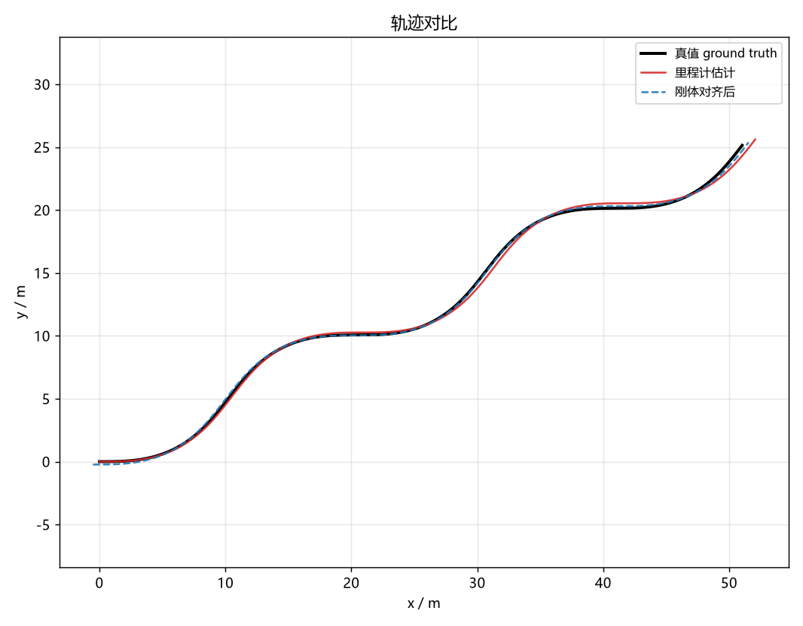
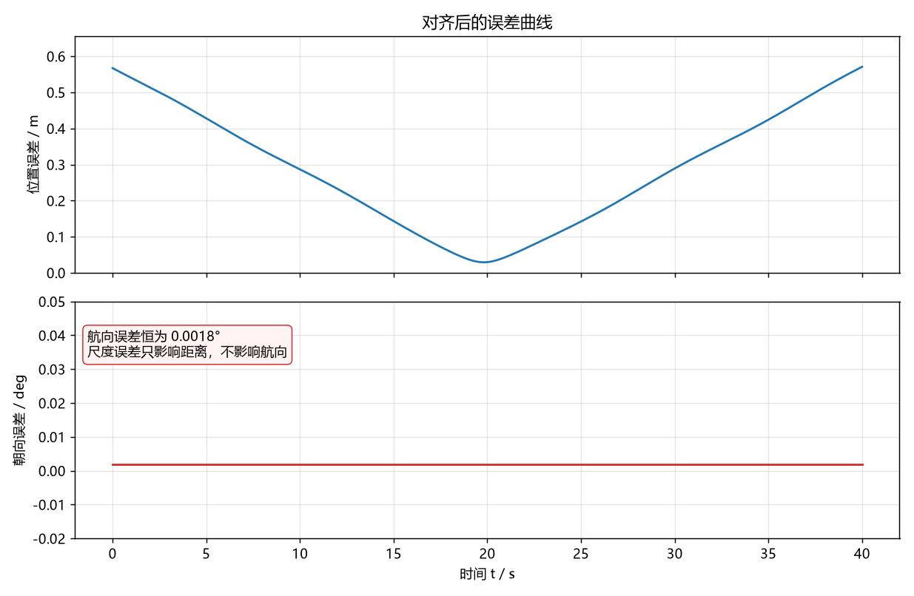
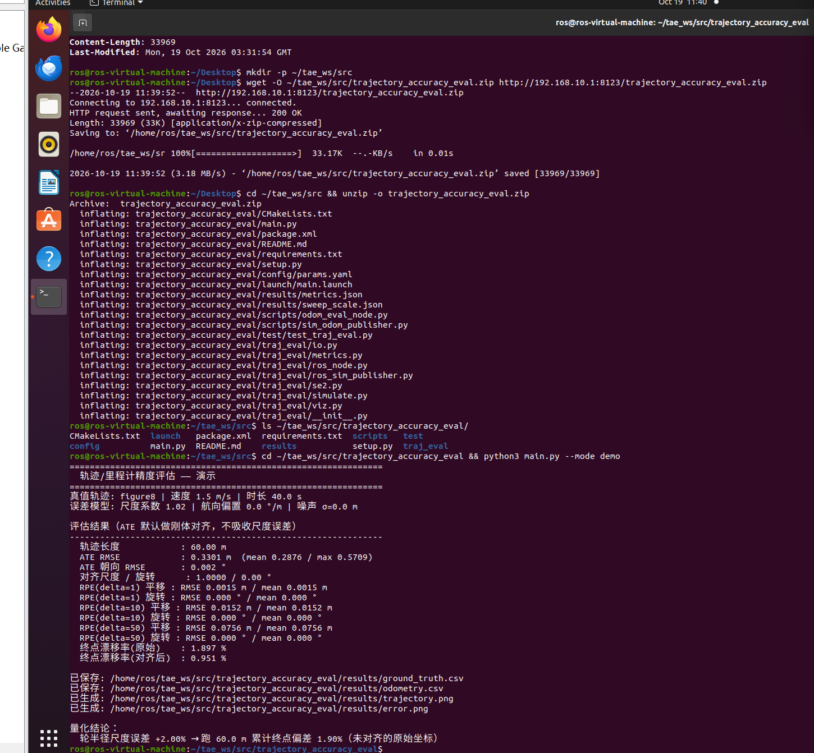
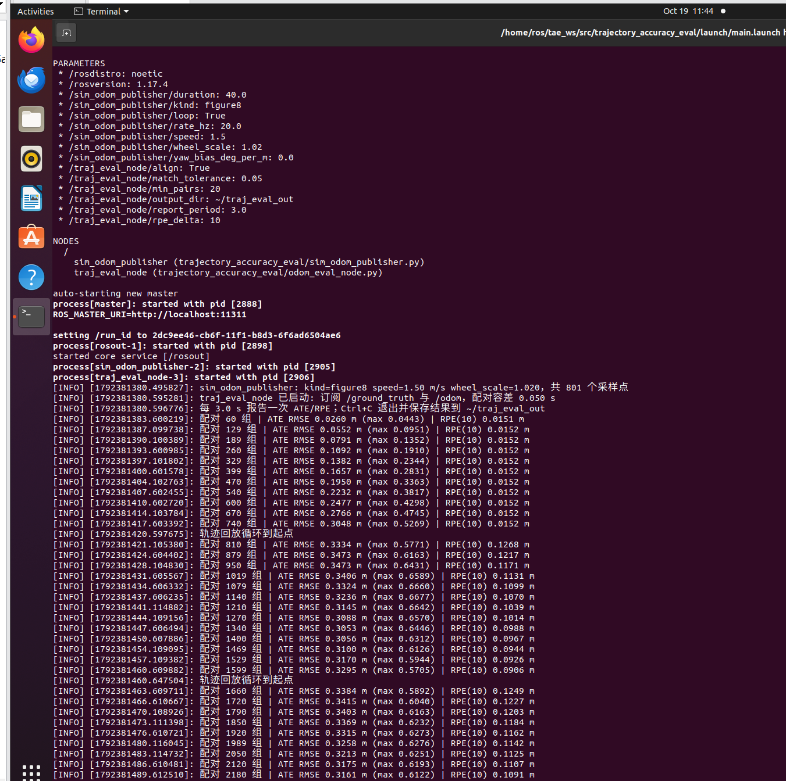

轨迹 / 里程计精度评估
所属模块：
src/ground/trajectory_accuracy_eval依赖：Python 3 + NumPy（离线）；ROS 1 Noetic（在线评估，可选） 不需要 Gazebo / CARLA / GPU
1. 这个模块解决什么问题
小车跑完一条轨迹，怎么判断它"跑得准不准"？
如果只看终点停在哪，会漏掉两类信息：轨迹中段是否整体偏移、以及局部运动是否算错。 本模块用三个标准指标把精度变成可比较、可复现的数字：
| 指标 | 定义 | 回答的问题 |
|---|---|---|
| ATE 绝对轨迹误差 | 整条轨迹刚体对齐后，逐点位置误差的 RMSE | 两条轨迹整体贴合得怎么样 |
| RPE 相对位姿误差 | 固定间隔 Δ 内相对运动的平移/旋转误差 |
局部运动估计准不准（尺度、漂移） |
| 漂移率 | 终点位置误差 ÷ 真值轨迹长度 × 100% | 跑 100 m 会偏多少米 |
这三个指标来自 SLAM 评测领域的标准做法（Sturm et al., IROS 2012）， 本模块把它们实现成不依赖 ROS 的纯 NumPy 工具，同时提供 ROS 1 在线版本。
2. 公式
设真值轨迹 、估计轨迹 （），均为二维位姿 。
2.1 刚体对齐（Umeyama）
求旋转 与平移 ，使
闭式解由两组点的协方差矩阵 的 SVD 给出：
默认不估计尺度。 这一点是刻意的：轮半径标定误差造成的正是尺度偏差，
如果对齐时把尺度吸收掉，ATE 反而看不出问题。需要单独观察尺度时可用 with_scale=True。
2.2 ATE
2.3 RPE
对间隔 的每一对帧：
取 的平移量 与旋转量 分别统计 RMSE。 RPE 不需要对齐，因此能直接暴露尺度误差。
2.4 漂移率
本模块同时输出原始（未对齐）与对齐后两个版本： 评估里程计标定效果看原始值，与文献对照 ATE 看对齐值。
3. 快速开始
cd src/ground/trajectory_accuracy_eval
# 生成一条 figure8 轨迹 + 带 2% 轮半径误差的里程计并评估
python3 main.py --mode demo
预期输出：
轨迹长度 : 60.00 m
ATE RMSE : 0.3301 m (mean 0.2876 / max 0.5709)
ATE 朝向 RMSE : 0.002 °
RPE(delta=1) 平移 : RMSE 0.0015 m
RPE(delta=10) 平移 : RMSE 0.0152 m
RPE(delta=50) 平移 : RMSE 0.0756 m
终点漂移率(原始) : 1.897 %
终点漂移率(对齐后) : 0.951 %
3.1 手算验证
指标是否算对，可以直接用纸笔核对：
每步前进 ， 轮半径尺度误差 2%，因此每步多算 。
- ✅
- ✅
- ✅
这三个数与程序输出一致，说明实现没有漏项。
3.2 运行效果
--mode demo 会同时导出两张图（保存在 results/ 下，可随时重新生成）：

图 1 轨迹对比。黑色为真值，红色为带 2% 轮半径误差的里程计轨迹， 蓝色虚线为刚体对齐后的结果——对齐抹平了整体偏移，但尺度误差导致的形状偏差仍然保留， 这正是 ATE 取 0.33 m 的原因。

图 2 对齐后的误差曲线。上图是位置误差（随时间增长，说明误差在累积而非随机抖动）， 下图是朝向误差：恒为 0.0018°，因为轮半径尺度误差只影响行驶距离、不影响航向。 注：这一项数值只有 1e-3 度量级，若不固定纵轴范围，绘图库会把 1e-14 的浮点噪声 放大成"尖峰"，看起来像几十度的误差——因此在绘图代码里显式设定了可读的纵轴范围。
在 Ubuntu 20.04 + ROS Noetic 的虚拟机上从零部署（下载、解压、直接运行）的实际过程：

图 3 在 Ubuntu 20.04 + Python 3.8.10 上的实际运行结果，与 Windows 下逐位一致。
4. 尺度误差的影响
python3 main.py --mode sweep
真值 figure8、1.5 m/s、40 s（轨迹长 60 m）：
| 尺度系数 | 尺度误差 | ATE RMSE / m | ATE max / m | 漂移率 / % |
|---|---|---|---|---|
| 0.96 | −4% | 0.6601 | 1.1397 | 3.793 |
| 0.98 | −2% | 0.3302 | 0.5710 | 1.898 |
| 0.99 | −1% | 0.1655 | 0.2868 | 0.950 |
| 1.00 | 0% | 0.0119 | 0.0173 | 0.055 |
| 1.01 | +1% | 0.1653 | 0.2866 | 0.949 |
| 1.02 | +2% | 0.3301 | 0.5709 | 1.897 |
| 1.04 | +4% | 0.6599 | 1.1397 | 3.793 |
两条可直接用于实验报告的结论：
- 漂移率与尺度误差近似成正比：2% 的轮半径误差，跑 60 m 就偏 1.9%， 即 100 m 偏约 3.2 m。
- 多算与少算对称：2% 的 ATE 都是 0.33 m，说明该指标对符号不敏感， 要判断"偏大还是偏小"需看原始（未对齐）坐标下的终点误差方向。
表格对应的数据文件：results/sweep_scale.json。
5. ROS 1 在线评估
不需要任何仿真器：launch 里自带一对"真值 + 带误差里程计"的数据源。
mkdir -p ~/catkin_ws/src
cp -r src/ground/trajectory_accuracy_eval ~/catkin_ws/src/
cd ~/catkin_ws
source /opt/ros/noetic/setup.bash
catkin_make
source devel/setup.bash
roslaunch trajectory_accuracy_eval main.launch
终端输出：
[INFO] sim_odom_publisher: kind=figure8 speed=1.50 m/s wheel_scale=1.020，共 801 个采样点
[INFO] traj_eval_node 已启动: 订阅 /ground_truth 与 /odom，配对容差 0.050 s
[INFO] 配对 401 组 | ATE RMSE 0.1665 m (max 0.2845) | RPE(10) 0.0152 m
跑满一圈后演示数据源会回到起点，并向 /traj_eval/reset 发一次信号，
评估节点随即清空缓冲、从新一轮重新统计（否则两圈轨迹会攒在一起，
循环处的"跳回起点"会被误当成真实运动，把 RPE 抬高数倍）：
[INFO] 轨迹回放循环到起点，已通知评估节点重置
[INFO] 收到重置信号，已清空 801 组缓存，重新开始评估
5.1 换场景
roslaunch trajectory_accuracy_eval main.launch kind:=circle
roslaunch trajectory_accuracy_eval main.launch wheel_scale:=1.01
roslaunch trajectory_accuracy_eval main.launch kind:=straight wheel_scale:=1.02
5.2 观察指标话题
rostopic echo /traj_eval/metrics
格式：[ATE_RMSE, ATE_MAX, RPE_delta_RMSE, 配对数]。
5.2 运行效果
roslaunch trajectory_accuracy_eval main.launch 启动后的实际终端输出：

图 4 ROS 1 实际运行。参数正确载入 /sim_odom_publisher/* 与 /traj_eval_node/*，
评估节点每 3 秒报告一次；随着累计行驶距离增加，ATE RMSE 从 0.0260 m 单调增长到
0.3473 m，而 RPE(10) 全程稳定在 0.0152 m——后者与理论值
（每步 0.075 m × 2% × 10 步 = 0.015 m）一致，说明节点内部的配对与指标计算没有偏差。
日志后半段"轨迹回放循环到起点"之后 RPE(10) 跳到 0.1268，
正是本节开头说明的循环重置问题（已由 /traj_eval/reset 修复）。
5.3 接自己的数据
| 方向 | 话题 | 类型 |
|---|---|---|
| 订阅 | /ground_truth |
nav_msgs/Odometry |
| 订阅 | /odom |
nav_msgs/Odometry |
| 订阅 | /traj_eval/reset |
std_msgs/Empty（清空缓冲，开始新一轮评估） |
| 发布 | /traj_eval/metrics |
std_msgs/Float64MultiArray |
把 rosbag play 或真实定位输出接到这两个话题即可。Ctrl+C 退出后，
配对好的轨迹写到 ~/traj_eval_out/，可再用离线模式复核：
python3 main.py --mode eval --gt ~/traj_eval_out/ground_truth.csv \
--est ~/traj_eval_out/odometry.csv
6. 参数说明
config/params.yaml：
sim_odom_publisher:
kind: "figure8" # straight / circle / figure8 / sine
speed: 1.5 # m/s
wheel_scale: 1.02 # 轮半径尺度误差
yaw_bias_deg_per_m: 0.0 # 每米航向偏置
rate_hz: 20.0
traj_eval_node:
match_tolerance: 0.05 # 时间戳配对容差 s
report_period: 3.0 # 报告周期 s
rpe_delta: 10 # RPE 间隔
min_pairs: 20
align: true # ATE 是否对齐
output_dir: "~/traj_eval_out"
7. 测试
python3 test/test_traj_eval.py # 自洽测试：41 项检查
python3 test/test_known_answer.py # 已知答案对拍：7 项
# 或按 pytest 的方式一次跑完
python3 -m pytest test/ -q # 15 passed
自洽测试（test_traj_eval.py，41 项）：SE2 运算、Umeyama 对齐（含镜像数据不产生反射）、
ATE（同轨迹为 0 / 随噪声单调增大 / 整体平移被对齐消除）、RPE 与解析值对照、漂移率解析值、
误差模型端到端一致性、CSV 读写往返、异常输入。
已知答案对拍（test_known_answer.py，7 项）：自洽测试只能验证"实现与自己一致"，
查不出"公式整体写错但内部自洽"的错误（对齐方式选错、旋转与平移求解顺序颠倒等）。
因此这个文件用两种独立于实现的答案源来对拍：
| 用例 | 独立答案来源 | 断言 |
|---|---|---|
| 相同轨迹 | 定义 | ATE < 1e-12 |
| 整体平移 d、不对齐 | 解析 | ATE 严格等于 d |
| 同心圆半径差 ΔR | 解析（圆对称，残差恒为 ΔR） | ATE 严格等于 ΔR |
| 刚体变换后对齐 | 解析 | ATE < 1e-9，且恢复出反向旋转角 |
| 匀速直线 + 尺度误差 | 解析 | RPE(Δ) = (k−1)·ds·Δ，漂移率 = (k−1)·100% |
| 已知高斯噪声 σ | 统计（Rayleigh 分布，均方根 σ√2） | ATE ≈ σ√2（误差 < 0.03 m） |
| 随机数据 | 暴力搜索：不用 SVD，对旋转角做网格搜索 + 黄金分割细化 | 与 Umeyama 的最优 RMSE 与旋转角一致（< 1e-6 / 1e-4 rad） |
最后一条是关键：暴力搜索完全不使用 SVD，若 Umeyama 实现有错（符号、转置、顺序）， 两者不可能对上。
全部测试只依赖 numpy，不需要 ROS。
7.1 跨平台可移植性（Windows 控制台编码）
Windows 默认控制台是 GBK，无法编码 ∘、⁻、¹ 这类数学符号。
早期版本在打印第一条结果时就抛 UnicodeEncodeError，导致断言没跑完就中断，
看起来像"测试失败"，实际是输出编码问题。
现在两个测试脚本都在启动时做了处理：
- 把
stdout/stderr的errors设为replace，任何无法编码的字符都不会再抛异常； - 对少量符号做 ASCII 等价替换（
∘→o、⁻¹→^-1、¹→^1等）， 先匹配多字符组合再逐字符兜底，因此 GBK 下输出仍然是可读的 （例如a ∘ a⁻¹ 的平移为 0显示为a o a^-1 的平移为 0）。
两种编码下都能完整跑完，结果一致：
| 控制台编码 | test/test_traj_eval.py |
test/test_known_answer.py |
pytest test/ |
|---|---|---|---|
| UTF-8（Linux / 现代终端） | 41 项通过 | 7 项通过 | 15 passed |
| GBK（Windows 默认） | 41 项通过 | 7 项通过 | 15 passed |
8. 已知限制
- 对齐不估尺度（默认）：这是刻意设计，见 2.1 节；需要时可
with_scale=True。 - 零误差仍有约 0.01 m 残留：仿真用一阶积分把相对运动重新积分成里程计轨迹，
与真值的解析积分存在离散差异，减小
--dt可降低。 - 只处理平面运动（SE2）：地面车辆足够；三维轨迹需扩展为 SE3。
- 要求两条轨迹逐点对应：按时间戳配对，不做重采样；采样率不同时请先插值。
ros_sim_publisher只是演示数据源：它不模拟真实传感器噪声， 仅用于展示从"两条轨迹"到"指标"的完整链路。
9. 参考
- Sturm et al. A Benchmark for the Evaluation of RGB-D SLAM Systems. IROS 2012.
- Umeyama. Least-squares estimation of transformation parameters between two point patterns. TPAMI 1991.